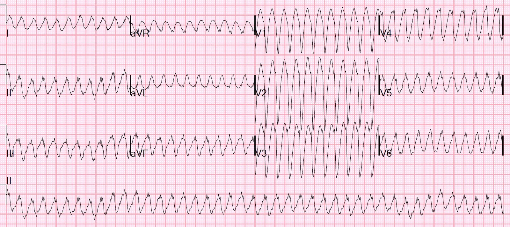
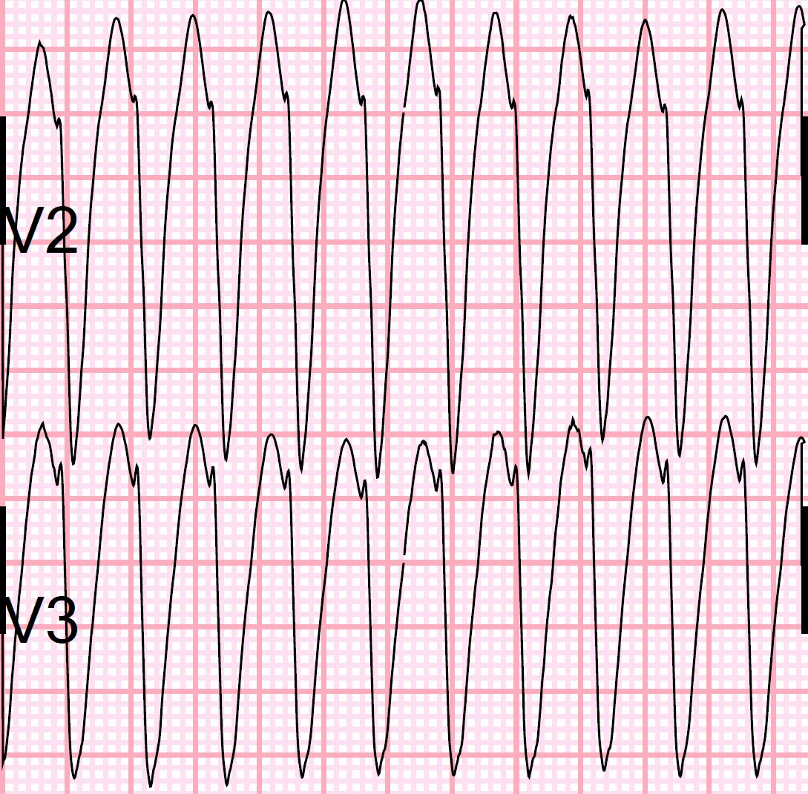
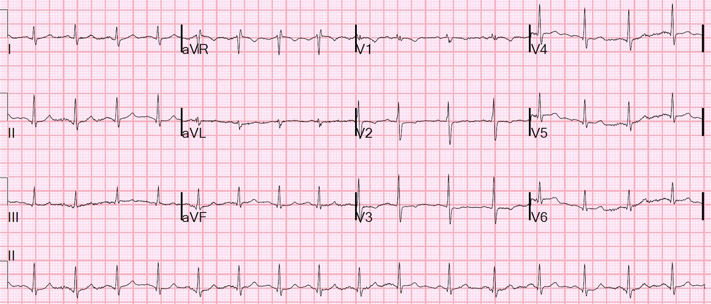
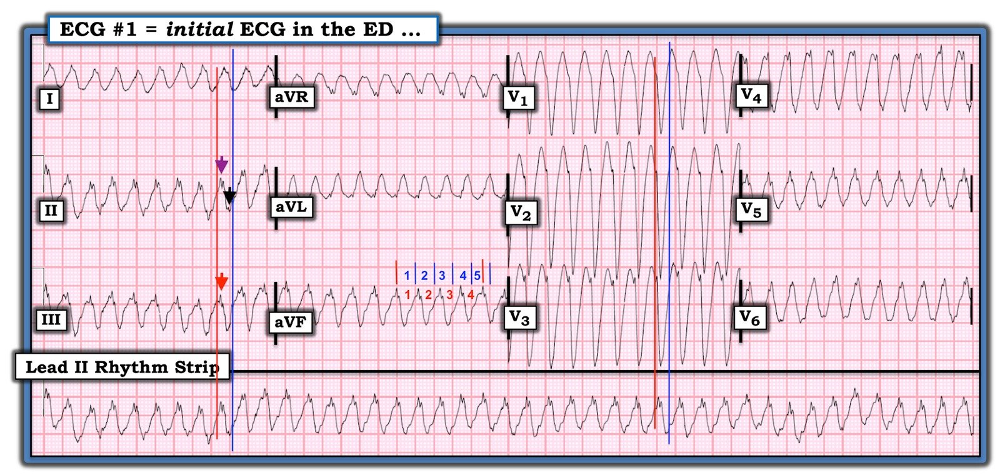

09/06/2020 — Một nhịp nhanh QRS rộng rất nhanh
Bản dịch tiếng Việt của bài "A very fast wide complex tachycardia" – Dr. Smith’s ECG Blog. Giữ nguyên toàn bộ 7 hình ảnh của bản gốc.
Một bệnh nhân 60 mấy tuổi được đội cấp cứu ngoài viện (EMS) đưa đến với các triệu chứng không đặc hiệu. Ông có một nhịp rất nhanh, không chuyển nhịp được bằng 6 mg, rồi 12 mg adenosine.
Khi đến viện, huyết áp 94/75, mạch 127.
Siêu âm tim tại giường được báo cáo là chức năng tốt, nhưng tôi vừa xem lại và thấy chức năng có giảm.
Đây là điện tâm đồ 12 chuyển đạo của bệnh nhân:


Bạn nghĩ gì?
Vì tần số cực nhanh, các bác sĩ điều trị nghĩ đây là rung nhĩ kèm WPW. Tuy nhiên, rõ ràng đây là một chẩn đoán sai.
Khi tần số quá nhanh, có thể nhầm một nhịp đều thành một nhịp không đều. Vì vậy nên dùng compa đo (calipers) (hoặc đánh dấu lên một mẩu giấy và dùng nó như compa). Nếu làm như vậy, ta sẽ thấy nhịp này đều hoàn toàn.
Rung nhĩ LUÔN LUÔN không đều. Đây không thể là rung nhĩ.
Hơn nữa, rung nhĩ kèm WPW luôn có các phức bộ QRS đa dạng. Các phức bộ ở đây đều giống hệt nhau.
Hình dạng của các phức bộ QRS này là gì?
Đó là các phức bộ LBBB hoàn hảo: một sóng r khởi đầu nhọn, theo sau là một sóng S có khử cực nhanh. Thời gian rS khoảng 55 ms, rất ngắn (nhanh), cho thấy đây là một nhịp trên thất.
Đây là V2 và V3 được phóng to:


Vậy đây là một nhịp nhanh đều, không phải nhịp xoang, kèm LBBB. Do đó, nó hoặc là:
1) PSVT, hoặc
2) cuồng nhĩ dẫn truyền 1:1, hoặc
3) như Jerry Jones viết dưới đây, là một nhịp nhanh nhánh bó (bundle branch block tachycardia). Điều này sẽ giải thích được tần số rất nhanh và cả sự khử cực ban đầu nhanh. Bất kỳ VT phân nhánh (fascicular VT) hay VT nhánh bó nào cũng có thể trông giống hệt SVT vì chúng khởi phát trong hệ dẫn truyền.
Pendell đã viết một bài rất hay về Palpitations of unusual etiology (Hồi hộp đánh trống ngực do nguyên nhân bất thường) — hoàn toàn về các nhịp nhanh phân nhánh và nhịp nhanh nhánh bó.
Trong cả 2 tình huống đầu tiên, dẫn truyền qua nút AV đều rất nhanh.
PSVT có thể là AVNRT (vòng vào lại nằm hoàn toàn trong nút AV) hoặc có thể do WPW. Trong WPW, vòng vào lại có thể đi xuống qua nút AV rồi đi ngược lên qua đường phụ (xuôi chiều) hoặc theo chiều ngược lại (ngược chiều); các nhịp đều do vào lại có sử dụng đường phụ được gọi là nhịp nhanh vào lại nhĩ thất (AV reciprocating tachycardia) hay AVRT.
Nếu AVRT là xuôi chiều, điện tâm đồ trông giống AVNRT. Nếu là ngược chiều, phần đầu của QRS rộng (tương tự một sóng delta), chứ không hẹp, và có thể giống VT.
Ca 1 trong bài này từ ngày 9 tháng Năm năm 2011 là một ca AVRT ngược chiều:
Wide complex tachycardias: 2 cases. What is the diagnosis and management? (Nhịp nhanh QRS rộng: hai ca. Chẩn đoán và xử trí là gì?)
Như vậy, trong ca hôm nay, ngay cả khi có WPW, dẫn truyền cũng không đi qua đường phụ; nếu có, sẽ có một sóng lệch ban đầu rộng, giống hệt như trong VT.
Đây là điện tâm đồ sau sốc điện chuyển nhịp:


Không có sóng delta và khoảng PR bình thường, tuy nhiên việc không có sóng delta không loại trừ được WPW.
Siêu âm tim chính thức cho thấy EF 37%, không có rối loạn vận động thành, nhưng vì EF giảm nên bệnh nhân đã được chụp mạch vành, kết quả thấy một tổn thương LAD 70% nhưng không giải thích được rối loạn nhịp.
Kết cục
Thăm dò điện sinh lý (EP) xác nhận cuồng nhĩ với blốc 1:1. Đã được triệt đốt.
Bàn luận
Dẫn truyền ẩn (không có trong ca này)
Khi có một đường phụ gây ra rối loạn nhịp nhưng không thấy được trên điện tâm đồ lúc bệnh nhân ở nhịp xoang, thì tình trạng này thường được gọi là “dẫn truyền ẩn” (concealed conduction).
Đây là một ca có dẫn truyền ẩn kèm phần giải thích kỹ lưỡng:
Wide Complex Tachycardia, and What is “Concealed Conduction?” (Nhịp nhanh QRS rộng, và “dẫn truyền ẩn” là gì?)
Adenosine là điều trị ban đầu phù hợp, nhưng không hiệu quả.
Sốc điện chuyển nhịp là điều trị phù hợp tiếp theo, và nó đã hiệu quả.
Nhưng chẩn đoán rung nhĩ kèm WPW là không đúng, và điều này có thể đã gây hậu quả cho việc xử trí nội trú sau đó.
Bệnh nhân sẽ được thăm dò điện sinh lý, nhưng việc này chưa được thực hiện.

===================================
BÌNH LUẬN CỦA TÔI, bởi KEN GRAUER, MD (9/6/2020):
===================================
==========
LƯU Ý (13/6/2020): Cả bình luận của tôi lẫn nhận xét của Dr. Jones đều được viết trước khi chúng tôi biết “Đáp án” của ca này (mà Dr. Smith vừa mới bổ sung gần cuối phần nhận xét của ông, dưới mục “Kết cục“). Vì vậy, xin hãy đọc nhận xét của chúng tôi với lưu ý rằng khi đó chúng tôi chưa biết “Đáp án” của ca này (tức là kết quả của thăm dò điện sinh lý đã được thực hiện).
==========
Một trong những rối loạn nhịp cấp tính thường gặp và quan trọng nhất mà người làm cấp cứu gặp phải là đánh giá bệnh nhân đến viện với một nhịp đều WCT ( = nhịp nhanh QRS rộng – Wide-Complex Tachycardia). Đây là trọng tâm của ca hôm nay. Tôi sẽ bổ sung một vài điểm vào phần giải thích súc tích của Dr. Smith:
- Chúng ta không được biết tuổi của bệnh nhân, cũng như tiền sử bệnh của ông. Tất cả những gì ta biết là bệnh nhân trong ca này đến viện với các triệu chứng không đặc hiệu — và điện tâm đồ mà tôi đã chép lại trong Hình 1. Theo những gì chúng tôi biết — bệnh nhân không dùng thuốc chống loạn nhịp vào thời điểm ghi điện tâm đồ #1.
- Nhịp trong điện tâm đồ #1 không đáp ứng với 6mg, rồi 12mg adenosine. Huyết áp của bệnh nhân được ghi nhận là 94/75 mm Hg. Tần số mạch 127/phút đo được khi đến khoa cấp cứu (ED) rõ ràng không phản ánh đúng mức độ nhanh của nhịp tim (Có lẽ chỉ cứ hai nhát tim mới có một nhát tạo ra mạch sờ thấy được …?).


SUY NGHĨ CỦA TÔI về điện tâm đồ #1: Trước đây tôi đã trình bày cách tiếp cận của mình đối với WCT đều (tức là Bình luận của tôi trong bài ngày 15 tháng Tư năm 2020 trên Dr. Smith’s ECG Blog) — cũng như đối với nhịp SVT đều (tức là Bình luận của tôi trong bài ngày 16 tháng Mười năm 2019). MẤU CHỐT để chẩn đoán và xử trí các nhịp nhanh đều này một cách hiệu quả về thời gian là áp dụng một cách hệ thống các nguyên tắc đã được nhấn mạnh trong 2 bài trước đó:
- Ưu tiên thứ 1 — là luôn luôn xác định XEM bệnh nhân có ổn định huyết động hay không. Lý do là NẾU bệnh nhân không ổn định — thì nhịp đó là gì không còn quan trọng nữa, vì sốc điện ngay lập tức là điều trị được lựa chọn cho một nhịp nhanh gây triệu chứng do hậu quả trực tiếp của tần số nhanh. Mặc dù tần số cực nhanh trong điện tâm đồ #1 — có lẽ vẫn còn ít nhất một “khoảnh khắc” để cân nhắc về nhịp, vì bệnh nhân vẫn duy trì được huyết áp tâm thu 94 mm Hg (là huyết áp thấp nhưng chưa ở mức nguy kịch), và mô tả “triệu chứng không đặc hiệu” nghe như bệnh nhân có lẽ vẫn còn chịu đựng được nhịp này. Dù vậy, đây rõ ràng là một tình huống mà “Phải có mặt ở đó mới biết” — đó là cách TỐT NHẤT để liên tục đánh giá xem có cần sốc điện chuyển nhịp ngay hay không.
- Như Dr. Smith đã nêu — adenosine là điều trị ban đầu phù hợp, nhưng nó không hiệu quả. Với tần số cực nhanh và huyết áp không tối ưu — sốc điện chuyển nhịp khi đó trở thành điều trị phù hợp tiếp theo, và nó đã hiệu quả!
Quay lại với nhịp của điện tâm đồ #1: Như trong Bình luận của tôi ở các bài 16/10/2019 và 15/4/2020 — tôi thấy cách dễ nhất để đánh giá bất kỳ nhịp tim nào theo 5 thông số MẤU CHỐT là nhớ câu “Watch your Ps, Qs and the 3 Rs”. (“Hãy để ý các P, Q và ba R”). Tôi thích thay đổi trình tự đánh giá các thông số này tùy theo thông số nào dễ phát hiện nhất:
- Trong điện tâm đồ #1 — nhịp đều — cực nhanh — phức bộ QRS cực rộng (tức là ~0,15 giây) — và không có sóng P xoang. Điều này xác định nhịp là một WCT đều.
Xem kỹ hơn 5 thông số MẤU CHỐT:
- Thật khó xác định độ rộng QRS trên bản ghi này. Tôi cho rằng giới hạn của phức bộ QRS trong điện tâm đồ #1 được xác định rõ nhất ở các chuyển đạo ghi đồng thời V1, V2 và V3. Đường thẳng đứng màu ĐỎ ở các chuyển đạo này cho thấy điểm mà tôi coi là khởi đầu của phức bộ QRS. Đường thẳng đứng màu XANH LAM cho thấy điểm mà tôi coi là kết thúc của QRS. Kéo thẳng các đường thẳng đứng này xuống dải nhịp dài chuyển đạo II ghi đồng thời cho thấy các giới hạn khởi đầu và kết thúc này của phức bộ QRS ở chuyển đạo II. Điều này giúp tôi xác định điểm khởi đầu và kết thúc của QRS ở các chuyển đạo ghi đồng thời I, II và III (các đường thẳng đứng ĐỎ và XANH LAM vẽ ở các chuyển đạo đó). Tôi đo được thời gian QRS khoảng ~0.15 giây.
- Rõ ràng không có sóng P xoang trong điện tâm đồ #1. Ở một số chuyển đạo có thấy vài sóng lệch có thể bị hiểu là đại diện cho một dạng hoạt động nhĩ nào đó (các đầu mũi tên ĐỎ, TÍM và ĐEN trong Hình 1). Mục đích tôi vẽ các đường thẳng đứng ĐỎ và XANH LAM ở các chuyển đạo I, II và III là để cho thấy mỗi sóng lệch được đánh dấu bằng đầu mũi tên đó đều nằm bên trong phức bộ QRS. Vì vậy tôi cho rằng các sóng lệch đó là một phần của QRS. Tôi không nghĩ có bằng chứng của hoạt động nhĩ trong điện tâm đồ #1.
- Một MẤU CHỐT để đánh giá nhịp trong điện tâm đồ #1 — là xác định chính xác tần số tim. Khi nhịp nhanh và đều — phương pháp Cách-Một-Nhát (hoặc Cứ-Mỗi-Ba-Nhát hay Cứ-Mỗi-Bốn-Nhát) cho phép ước tính tần số nhanh và chính xác. Hãy tìm một phần của phức bộ QRS bắt đầu trên một đường kẻ đậm. Trong điện tâm đồ #1 — tôi chọn sóng lệch nhọn nhỏ ở chuyển đạo aVF (Xem vạch ngắn ĐỎ thứ 1 ở chuyển đạo này, nằm ngay phía trên gai nhọn). Dùng phương pháp Cứ-Mỗi-Bốn-Nhát — thời gian cần để ghi 4 nhát (các số ĐỎ ở chuyển đạo aVF) là hơn 4 1/2 ô lớn một chút (các số XANH LAM trong Hình này). Do đó — MỘT PHẦN TƯ tần số hơi nhanh hơn 300/5 — tức là trong ca này, 1/4 tần số là ~67/phút.
- Do đó tần số thực của nhịp trong điện tâm đồ #1 là ~67 X 4 ~268/phút. Biết tần số thực của nhịp nhanh QRS rộng (WCT) trong điện tâm đồ #1 có liên quan đến ca này — như chúng ta sẽ thấy dưới đây.
- BẤM VÀO ĐÂY — nếu quan tâm đến video ôn tập ngắn về phương pháp Cách-Một-Nhát này.
Tổng hợp lại tất cả:
- Do đó nhịp trong điện tâm đồ #1 là một nhịp WCT đều với tần số ~268/phút, không có dấu hiệu rõ ràng của hoạt động nhĩ. Về mặt thống kê — ít nhất 80-90% trường hợp, nhịp có mô tả như vậy sẽ hóa ra là VT (nhịp nhanh thất — Ventricular Tachycardia). Dù vậy — hình dạng QRS trong điện tâm đồ #1 (như Dr. Smith đã nêu) hoàn toàn phù hợp với LBBB (sóng R một pha ở các chuyển đạo bên I và V6; ưu thế âm ở mỗi chuyển đạo trước).
- Mặc dù huyết động còn lâu mới là chỉ dấu không thể sai (tức là, tôi đã gặp những ca VT với huyết áp tâm thu gần 200 mm Hg) — việc bệnh nhân này vẫn ổn định một cách đáng ngạc nhiên mặc dù tần số tim ~268/phút càng củng cố cho hình dạng QRS gợi ý rằng nhịp WCT đều này nhiều khả năng là trên thất.
- Vậy — NẾU nhịp trong điện tâm đồ #1 là trên thất — Những loại nhịp SVT nào đạt tới tần số tim nhanh như vậy? Das & Zipes (Electrocardiography of Arrhythmias; Elsevier, Philadelphia, PA, 2012) cho rằng các nhịp SVT vào lại (tức là AVNRT và AVRT) thường gặp nhất là không vượt quá ~250/phút ở người lớn — NHƯNG — đôi khi chúng có thể đạt tần số SVT nhanh tới 280/phút. Một khả năng khác có thể là cuồng nhĩ (AFlutter) với dẫn truyền AV 1:1 (như ở bệnh nhân có WPW).
ĐIỀU CỐT LÕI: Thực tế — không thể chắc chắn về nguyên nhân của nhịp WCT đều trong điện tâm đồ #1 chỉ từ bản ghi ban đầu tại khoa cấp cứu này (nhất là khi thiếu thông tin bệnh sử của bệnh nhân này). “Linh cảm” của tôi — là nhịp trong điện tâm đồ #1 là cuồng nhĩ với dẫn truyền AV 1:1 vì: i) Tần số thất 268/phút nằm trong khoảng tần số nhĩ thường gặp của cuồng nhĩ chưa điều trị (khoảng ~250 đến 350/phút) — trong khi 268/phút nhanh hơn tần số thường thấy ở AVNRT hoặc AVRT; và, ii) Chúng ta được biết là không có đáp ứng với 2 liều Adenosine — mà cả AVNRT lẫn AVRT thường đáp ứng với thuốc này. Mặt khác — cuồng nhĩ sẽ không được chuyển nhịp bằng Adenosine. Dù vậy — chúng ta không thể chắc chắn khả năng nào ở trên là nguyên nhân thực sự của điện tâm đồ #1 (AVNRT hoặc AVRT xuôi chiều kèm dẫn truyền lệch hướng kiểu lbbb; AVRT ngược chiều; cuồng nhĩ ngược chiều với dẫn truyền AV 1:1, có lẽ kèm WPW — hoặc thậm chí VT với hình dạng giống lbbb).
- Điều có thể nói được (như Dr. Smith đã nêu) — là tính đều tuyệt đối (và hình dạng QRS nhất quán) của nhịp trong điện tâm đồ #1 loại trừ AFib rất nhanh kèm WPW.
- Điều cũng có thể nói được — là việc dùng Adenosine ban đầu như một thử nghiệm chẩn đoán/điều trị là phù hợp, nhất là khi chúng ta nghi ngờ nhịp này nhiều khả năng là trên thất. Ngay cả khi nhịp hóa ra là VT — thời gian bán thải cực ngắn của Adenosine (dưới 10 giây) khiến thuốc khó có thể gây hại.
- T.B. (P.S.): Chúng ta được biết rằng nhịp nhanh trong ca này “không được chuyển nhịp bằng 6mg, rồi 12mg Adenosine”. Mặc dù cách diễn đạt này ngụ ý rằng việc dùng Adenosine HOÀN TOÀN KHÔNG CÓ TÁC DỤNG GÌ — điều đó không được nêu rõ. Tôi đã học được “một cách đắt giá” — rằng nên quay lại xem chính xác điều gì đã xảy ra (trong ca này là các dải theo dõi liên tục của nhịp nhanh ban đầu trong và ngay sau khi dùng Adenosine) — để xem LIỆU có chậm lại chút nào không — hoặc có lẽ có chuyển nhịp xoang thoáng qua “tố cáo” (telltale), rồi nhịp WCT nhanh chóng tái lập. Ngay cả khi Adenosine không chuyển được một nhịp SVT — thuốc thường có thể cung cấp nhiều thông tin chẩn đoán bằng cách bộc lộ hoạt động nhĩ ẩn trong khoảng thời gian ngắn tần số chậm lại tạm thời sau khi dùng thuốc.

PHẦN BỔ SUNG (ngày 9 tháng Sáu năm 2020 lúc 5 giờ chiều): Sau khi viết Bình luận của tôi ở trên — tôi đã suy nghĩ thêm về ca này. Vào lúc tôi viết Bình luận của tôi hôm qua — tôi chưa có bản ghi sau chuyển nhịp.
- Như Dr. Smith đã nêu — bản ghi sau chuyển nhịp cho thấy nhịp xoang với phức bộ QRS hẹp; vùng chuyển tiếp sớm (R=S đối với phức bộ QRS rất nhỏ ở chuyển đạo V1); và các bất thường sóng ST-T không đặc hiệu, trông không cấp tính. KHÔNG có sóng delta. Mặc dù điều này không loại trừ hoàn toàn khả năng WPW — nó thực sự khiến khả năng cuồng nhĩ xuôi dòng với dẫn truyền AV 1:1 ở bệnh nhân có WPW thấp hơn nhiều.
Tôi đã gửi bản ghi và các câu hỏi của mình cho Dr. Jerry Jones, một nhà lâm sàng-giáo dục nổi tiếng quốc tế và có nhiều công bố, người thường xuyên bình luận trên Dr. Smith’s ECG Blog. Tôi nghĩ nhận định của Dr. Jones, rằng nhịp trong điện tâm đồ #1 là BBR VT (nhịp nhanh thất vào lại nhánh bó His — Bundle Branch Reentrant Ventricular Tachycardia) là hợp lý nhất với các chi tiết của ca này.
- BBR VT là một dạng VT không thường gặp. BẤM VÀO ĐÂY — để xem một bài tổng quan xuất sắc về chủ đề này.
- Dr. Smith cho biết thăm dò điện sinh lý (EP) đang chờ thực hiện. Tôi mong được xem kết quả!
Dr. JONES đã viết cho tôi như sau:
Thật là một nhịp WCT rất thú vị! Đây là suy nghĩ của tôi …
- Thứ nhất, tần số — dù không quá nhanh đối với MỘT SỐ nhịp nhanh thất — nhưng đơn giản là quá nhanh đối với PHẦN LỚN các nhịp xuất phát từ tâm thất (nhưng không phải TẤT CẢ — sẽ nói thêm ngay sau đây). Tôi thường mong đợi thấy VT có tần số trong khoảng 160 đến 180/phút — và theo kinh nghiệm của tôi, phần lớn đúng như vậy. Nhịp đều tuyệt đối về mặt toán học, nên rung nhĩ bị loại khỏi phương trình. Cá nhân tôi nghĩ 268/phút là quá nhanh đối với bất kỳ nhịp nào có liên quan đến nút AV, ngoại trừ ở trẻ nhỏ và có thể ở người trẻ, rất khỏe mạnh. Một lần nữa, ở đây chúng ta không biết tuổi hay tình trạng chung của bệnh nhân.
- Tôi nghĩ huyết áp 94/75 mm Hg, với mạch chỉ bắt được khoảng cách một nhát, là rất đáng lo ngại. Huyết áp tâm thu 94 có thể ổn với một phụ nữ nặng khoảng 90 lbs — nhưng tôi đoán ở đây không phải như vậy. Và nếu huyết áp “bình thường” của bệnh nhân gần với 160 — thì đây là một mức tụt rất đáng kể. Một lần nữa, như anh nói đấy Ken: “Phải có mặt ở đó mới biết!” Có lẽ tôi đã thiên về sốc điện chuyển nhịp ngay, trừ khi bệnh nhân trông đặc biệt ổn (nhưng một lần nữa, tôi không có mặt ở đó). Tôi đã điều trị những bệnh nhân từng trải qua cả adenosine lẫn an thần/sốc điện chuyển nhịp — và TẤT CẢ họ đều thích an thần/sốc điện chuyển nhịp hơn!
- Về vấn đề sườn xuống thẳng, trơn của sóng S ở chuyển đạo V1 — tôi nhớ nhiều năm trước, khi lần đầu đọc bài báo nổi tiếng của Marriott về cách phân biệt ngoại tâm thu (ectopy) với dẫn truyền lệch hướng, và biết về sườn xuống thẳng, trơn ở V1. Tôi rất ấn tượng với thông tin đó, và ngay lập tức chẩn đoán sai một số ca VT khi dựa vào dấu hiệu đó. Tôi phát hiện ra rằng VT có thể biểu hiện với cùng sườn trơn như vậy — như tôi cảm thấy là trong ca cụ thể này. Giờ tôi coi dấu hiệu này là hỗ trợ — nhưng tôi sẽ rất, rất thận trọng khi đặt chẩn đoán chỉ dựa vào riêng nó. Điều đó giống như hình “tai thỏ” trong RBBB. Đa số mọi người biết rằng nếu tai trái cao hơn, thì đó là biểu hiện của ngoại tâm thu (ectopy). Điều họ KHÔNG biết là cuộc bàn luận kết thúc ngay tại đó — vì tai thỏ phải cao hơn có thể thấy ở CẢ dẫn truyền lệch hướng LẪN ngoại tâm thu.
- Cuối cùng — Nếu nhịp WCT trong ca hôm nay là do dẫn truyền ngược chiều ở bệnh nhân có đường phụ — thì tôi sẽ mong thấy bằng chứng tiền kích thích thất trên điện tâm đồ sau chuyển nhịp. Nhưng nó không có ở đó …
Tóm lại — tôi nghĩ nhịp trong ca hôm nay nhiều khả năng nhất là nhịp nhanh vào lại nhánh bó His. Đó là lý do nó không đáp ứng với adenosine — nhưng đáp ứng ngay lập tức với sốc điện chuyển nhịp. Nhịp nhanh vào lại nhánh bó His có thể biểu hiện với hình dạng LBBB hoặc RBBB.
- Theo kinh nghiệm của tôi, dạng LBBB phổ biến hơn nhiều và thường (dù không phải luôn luôn) trông giống hệt LBBB ở V1. Khi nó bắt đầu ở thất phải, nó bắt đầu bên trong hệ thống dẫn truyền, đi XUỐNG nhánh phải (giống hệt như trong LBBB) — rồi băng qua vách liên thất (giống hệt như trong LBBB) — và sau đó đi ngược lên nhánh trái. Vì vậy, hoàn toàn có thể một BBRT với hình dạng LBBB có sườn xuống thẳng, trơn của sóng S ở chuyển đạo V1.
- BBRT cũng nổi tiếng về tần số rất nhanh — đôi khi ở mức trên 200 và gần tới 300/phút! Vì thế chúng có tính chất gây tử vong.
Một lần nữa, tôi nghĩ đây nhiều khả năng nhất là một BBRT với hình dạng LBBB. Tôi xin chúc mừng đội cấp cứu đã cứu sống người đàn ông này!
— Ký tên: Jerry W. Jones, MD, FACEP, FAAEM —